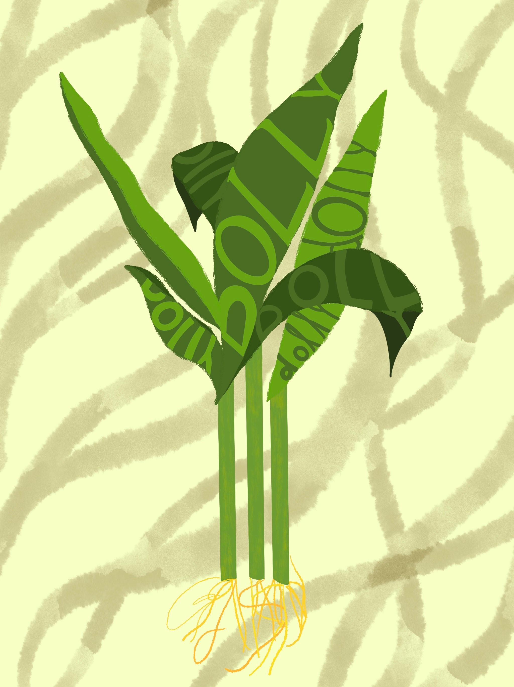
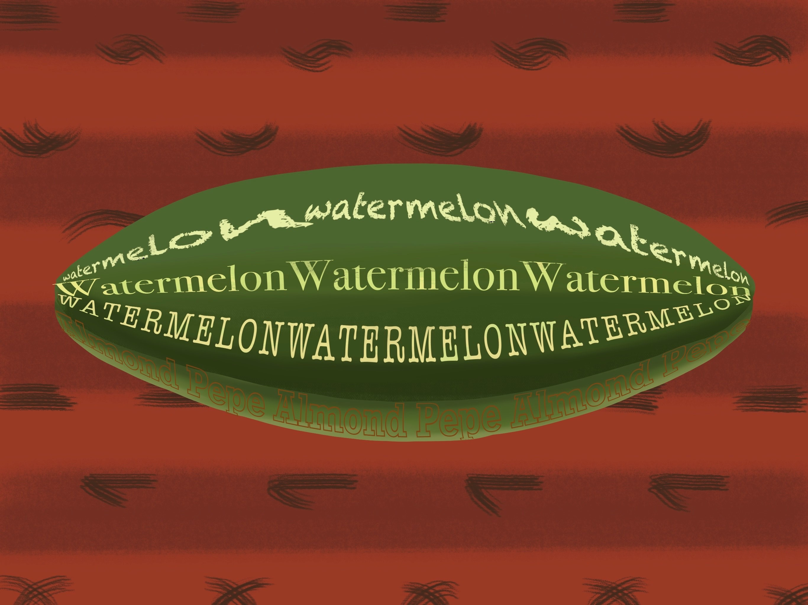
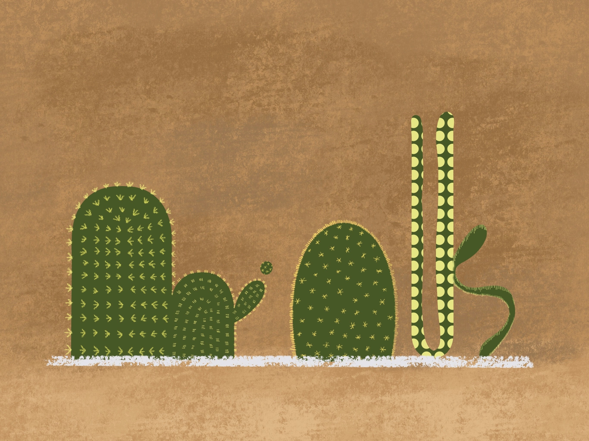
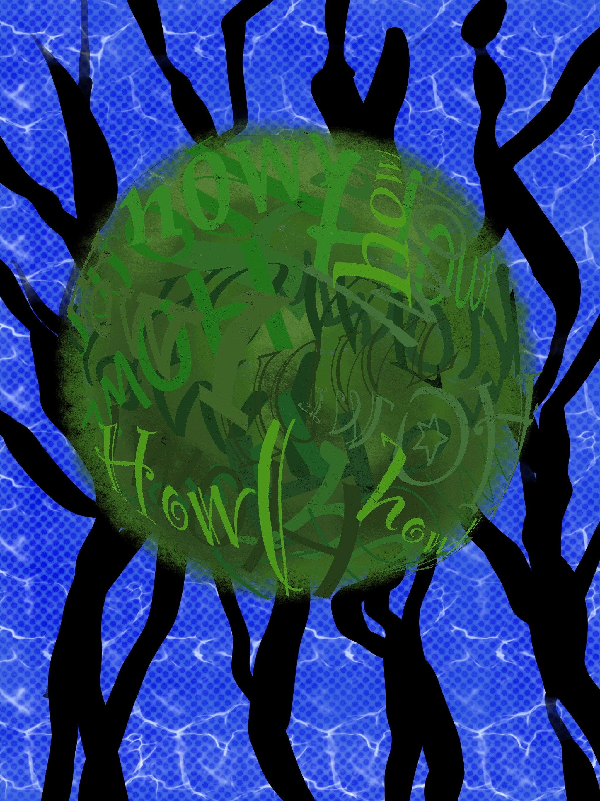

Typography
This is a typography work about my plants.
The works represent traits of each plant, which are Dolly, Watermelon, Minus, and Howl.
Typography
   
Plan
pdf
Another Areas
Project. City
Project. Plants
Project. Insomnia
Portfolio Project Center